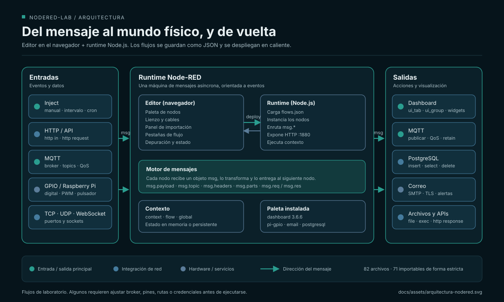
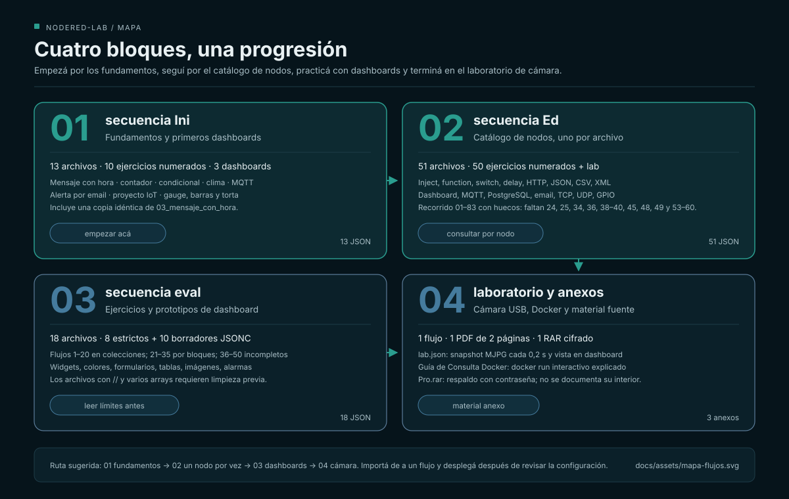
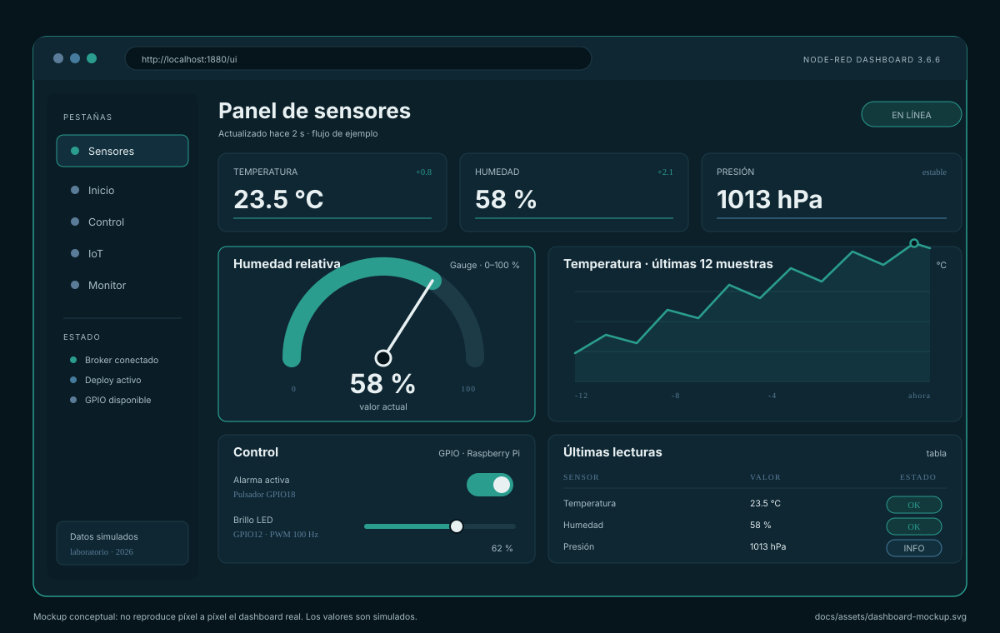

Flujos para
aprender IoT.
Una colección de flujos Node-RED: desde el primer mensaje hasta dashboards, MQTT y GPIO.

Node-RED Lab
Colección didáctica de 82 flujos Node-RED: fundamentos, catálogo de nodos y ejercicios con dashboard, MQTT, PostgreSQL y GPIO de Raspberry Pi.
Node-RED Lab
Colección didáctica de 82 flujos Node-RED: fundamentos, catálogo de nodos y ejercicios con dashboard, MQTT, PostgreSQL y GPIO de Raspberry Pi.
Los fragmentos son exportaciones reales de Node-RED. Los brokers públicos, credenciales de ejemplo y rutas locales aparecen en el repositorio como marcadores y deben reemplazarse antes de ejecutar.
Qué es y por qué existe
Colección de 82 flujos Node-RED reunidos durante años de experimentación: 322 nodos de 62 tipos y 18 pestañas de dashboard que cubren MQTT, GPIO de Raspberry Pi, cámaras, bases de datos y paneles de control. Sirve como biblioteca de ejemplos y como registro de patrones de integración para quien ya opera Node-RED y busca recetas concretas que importar y adaptar.
No es una aplicación ejecutable ni un paquete: no incluye package.json, settings.js, flows.json ni pruebas. Su valor es documental y didáctico, con 71 archivos JSON estrictamente importables y un README que clasifica cada flujo, señala los borradores y advierte sobre brokers públicos, credenciales de marcador y rutas locales que deben reemplazarse.
Documentación preservada
El README original, completo y en su contexto.
Aviso de alcance. Este repositorio es una colección de flujos de laboratorio, no una aplicación Node-RED lista para producción. Varios flujos usan brokers públicos, credenciales de ejemplo, rutas locales, pines de Raspberry Pi y datos simulados. Antes de ejecutarlos, revisá Límites y estado real y ajustá broker, pines, rutas y credenciales.
Índice
- Qué es Node-RED
- Qué es este repositorio
- Principio de funcionamiento
- Mapa de flujos
- Requisitos
- Instalación
- Cómo importar un flujo
- Primer flujo en cinco minutos
- MQTT
- Dashboard
- GPIO de Raspberry Pi
- PostgreSQL, correo y archivos
- HTTP, APIs y cámara USB
- Ejemplos de uso realistas
- Diagrama de conexión
- Calibración
- Seguridad y buenas prácticas
- Límites y estado real
- Solución de problemas
- Estructura del repositorio
- Documentación y licencia
Qué es Node-RED
Node-RED es una herramienta de programación visual y de bajo código para aplicaciones orientadas a eventos. Nació en IBM en 2013 (Nick O'Leary y Dave Conway-Jones) y hoy es un proyecto de la OpenJS Foundation. Corre sobre Node.js, se edita en el navegador y guarda los flujos como JSON.
La idea es conectar nodos con cables. Cada nodo recibe un objeto msg, lo transforma y lo entrega al siguiente. El runtime se encarga del orden, de las llamadas asíncronas, de la red y del estado.
[ inject ] ──msg──> [ function ] ──msg──> [ debug ]
dispara transforma muestra
No es un lenguaje ni un sistema operativo: es un orquestador de mensajes. Sirve para pegar servicios, protocolos y dispositivos que de otro modo requerirían scripts separados. La lógica compleja va en un nodo function (JavaScript); la simple se resuelve con nodos de configuración.
El editor (navegador) sirve para arrastrar, cablear, configurar y desplegar; el runtime (Node.js) carga los flujos, instancia los nodos y expone HTTP/WebSocket; el flujo es un array JSON; el mensaje es el objeto msg que viaja de nodo en nodo.
Las propiedades más usadas son msg.payload (dato principal), msg.topic (tema MQTT, asunto o consulta), msg.headers (HTTP), msg.req/msg.res (petición/respuesta), msg.parts (mensajes partidos) y msg._msgid (identificador). Además hay contexto: context por nodo, flow por pestaña y global por runtime; los flujos 43 y 44 lo demuestran.
Por qué se usa en IoT
Habla HTTP, MQTT, TCP, UDP, WebSocket y serial sin escribir servidores; tiene nodos para GPIO, bases de datos, correo y archivos; el dashboard se arma con widgets y se actualiza por WebSocket. Es fácil de prototipar y de enseñar porque el flujo se ve. La contraparte: un flujo visual también puede ser inseguro, difícil de versionar y frágil si no se documenta. Ese es el motivo de este README y de docs/.
Qué es este repositorio
nodered-lab reúne flujos Node-RED usados como material de aprendizaje y laboratorio. Proviene de jmadasme/NodeRed, según versions/NodeRed/VERSION.md. La copia conserva el contenido original y excluye credenciales, bases de datos y artefactos de ejecución.
No contiene package.json, node_modules, flows.json, flows_cred.json, settings.js, credenciales reales ni un servidor listo para desplegar. Sí contiene 82 archivos JSON, un PDF de Docker, un RAR cifrado y tres secuencias didácticas.
Procedencia y cifras
| Dato | Valor |
|---|---|
| Origen declarado | jmadasme/NodeRed |
| Carpetas | secuencia Ini, secuencia Ed, secuencia eval |
| Archivos JSON | 82 |
| JSON estrictamente válidos | 71 |
| Requieren limpieza (JSONC) | 10 |
| Error de formato | 1 (83-rpi-gpio-pwm-output.json) |
| Nodos en los 71 válidos | 322 |
| Tipos de nodo | 62 |
| Pestañas de dashboard | 18 |
| Nodos de dashboard | 98 |
| Saltos CRLF | 81 de 82 archivos |
| Licencia | MIT (ver LICENSE) |
Sobre
VERSION.md. Menciona usar los.examplecuando existan. En esta copia no hay archivos.example: los valores de configuración son marcadores dentro de los propios JSON y deben reemplazarse a mano.
Principio de funcionamiento
Node-RED es software, pero este laboratorio toca el mundo físico. Entender ese puente ahorra la mitad del diagnóstico.
Del mundo físico al mensaje. Un sensor o pulsador cambia una magnitud (temperatura, humedad, presión, luz, posición). Un circuito la convierte en una señal dentro del rango de la Raspberry Pi (0–3,3 V en GPIO digital). El nodo rpi-gpio in lee el pin y publica un msg.payload; un function, range o switch normaliza, escala o clasifica; el mensaje se publica por MQTT, se guarda en PostgreSQL, se muestra en el dashboard o dispara un correo.
Del mensaje al mundo físico. El dashboard, un inject, un mensaje MQTT o una petición HTTP generan un msg. rpi-gpio out escribe el pin: nivel alto/bajo para un LED o relé, o PWM para regular intensidad. Un transistor, MOSFET, optoacoplador o relé adapta los 3,3 V a la carga real.
La parte de red. MQTT viaja sobre TCP/IP; un broker recibe publicaciones y las reparte según tópico y QoS. HTTP usa peticiones/respuestas; http in crea un endpoint y http response lo contesta. WebSocket mantiene una conexión bidireccional que el dashboard usa para actualizar widgets sin recargar. PostgreSQL y SMTP son TCP clásico con autenticación. La cámara USB suele exponer un stream MJPEG por HTTP; el flujo pide un snapshot JPEG y lo convierte a data: URI.

Mapa de flujos
La colección es una progresión. No es necesario importar todo; de hecho, conviene importar de a un flujo para entender qué nodo resuelve qué problema.

secuencia Ini — fundamentos (13 archivos)
| Archivo(s) | Qué enseña | Nodos |
|---|---|---|
02–05 |
Primer dashboard, hora, contador con context y condicional. |
inject, ui_text, function, switch, debug |
06–08 |
Open-Meteo, gráfico y MQTT local publicar/recibir. | http request, ui_chart, mqtt in/out |
09–10 |
Alerta por correo y mini proyecto IoT con gauge, historial y umbral. | e-mail, ui_gauge, ui_chart, switch |
a.json, b.json, c.json |
Dashboards de temperatura, barras y torta. | ui_gauge, ui_chart, ui_slider, ui_text |
03_mensaje_con_hora - copia.json es una copia idéntica (mismo MD5) del original. Ruta sugerida: 02 → 03 → 04 → 05 → 06 → 07 → 08 → 09 → 10 → a/b/c.
secuencia Ed — catálogo de nodos (51 archivos)
Cada archivo aísla un nodo o una técnica. Los números no son consecutivos: faltan, entre otros, 24, 25, 34, 36, 38–40, 45, 48, 49 y 53–60.
Bloques: 01–10 inject/debug/function/change/switch/template/delay/trigger/exec · 11–23 RBE, HTTP, join/split, link, status, catch, JSON, CSV, XML, file · 26–28 range, sort, batch · 29–37 widgets de dashboard · 41–47 WebSocket, UDP, variables, cron, POST · 50–52 flujo completo y TCP · 61–62 MQTT · 71–73 PostgreSQL · 81–83 GPIO · lab cámara USB.
secuencia eval — ejercicios y dashboards (18 archivos)
Ocho archivos son JSON estricto: 1-10.json, 11-20.json, 1-30.json (que en realidad contiene 21–30), 1.-dashboard basico.json, 2.botonsimple.json, 3 slider.json, 4.grafico simple..json y 5 switch interruptor.json. Los otros diez son borradores JSONC: 6 al 20, 11 al 20 (tres variantes), 21 al 25, 21 al 35, 25 al 35, 25 al 5w vesion 2, 31-35 y 36 al 50. Cubren textos, dropdowns, toasts, formularios, tablas, imágenes, alarmas, motor, sensores, iluminación, clima, RFID, inventario y videovigilancia.
Qué significa JSONC acá: el archivo tiene comentarios // y, en varios casos, varios arrays consecutivos en lugar de un único array. Node-RED espera un array JSON estricto. Son borradores de cuaderno, no exportaciones directas. Ver Cómo importar.
Anexos
| Archivo | Descripción |
|---|---|
Guía de Consulta Docker.pdf |
2 páginas sobre docker run -it --name ... bash. |
Pro.rar |
RAR v5 de 4 KB, cifrado con contraseña. No se documenta su interior. |
VERSION.md |
Nota de procedencia. |
Requisitos
Software: Node.js 18/20 LTS y Node-RED 3.x (4.x debería funcionar). Para los widgets, node-red-dashboard 3.6.6; para GPIO, node-red-node-pi-gpio; para correo, node-red-node-email; para PostgreSQL, node-red-contrib-postgresql. Opcionales: Mosquitto 2.x (MQTT local), PostgreSQL 13+ y Docker 20+. Navegador reciente para editor y dashboard.
Hardware: PC con Linux, macOS o Windows y 2 GB de RAM recomendados. Para GPIO: Raspberry Pi 3/4/5 con header de 40 pines, dos LEDs, resistencias de 220–330 Ω, un pulsador, 10 kΩ opcional, protoboard y cables. Para cámara: USB compatible con UVC servida por MJPEG-streamer.
Red: 1880/TCP (editor y dashboard), 1883/TCP o 8883/TLS (MQTT), 5432/TCP (PostgreSQL), 465/587/TCP (SMTP), 8080/TCP (cámara), 18800/TCP (TCP) y 4000/UDP.
No hay
requirements.txt. No es una aplicación Python: las dependencias se instalan como paquetes de la paleta connpmdentro de~/.node-red, o se declaran en unpackage.jsonsi convertís la colección en una instancia ejecutable. Tampoco haypackage.jsonen esta copia.
Instalación
Opción A: Node-RED nativo
node --version
npm --version
sudo npm install -g --unsafe-perm node-red
node-red
Abrí http://localhost:1880. Si el puerto está ocupado, Node-RED lo indica; se cambia con --port o en settings.js.
Opción B: Raspberry Pi
bash <(curl -sL https://raw.githubusercontent.com/node-red/linux-installers/master/deb/update-nodejs-and-nodered)
sudo systemctl enable --now nodered.service
El GPIO requiere que el usuario del servicio tenga permisos sobre /dev/gpiochip* o pertenezca al grupo gpio.
Opción C: Docker
docker run -it -p 1880:1880 -v node_red_data:/data --name nodered nodered/node-red
-it habilita consola interactiva; -p publica el editor; -v persiste flujos y credenciales; --name fija el nombre.
Instalar los nodos de la paleta
Con Node-RED detenido o desde Menu → Manage palette → Install:
cd ~/.node-red
npm install node-red-dashboard@3.6.6
npm install node-red-node-pi-gpio
npm install node-red-node-email
npm install node-red-contrib-postgresql
Reiniciá con sudo systemctl restart nodered.service o volvé a lanzar node-red.
Versión del dashboard.
lab.jsondeclaranode-red-dashboard: 3.6.6en suglobal-config. Esa es la referencia. No es Dashboard 2.0 de FlowFuse (@flowfuse/node-red-dashboard), que usa otra arquitectura. Estos flujos son de la generación Angular clásica (ui_templateconng-src).
Servicios opcionales
# MQTT local
sudo apt install mosquitto mosquitto-clients
sudo systemctl enable --now mosquitto
# PostgreSQL
sudo apt install postgresql
sudo -u postgres psql
Para un laboratorio, Mosquitto puede quedar con listener 1883 y allow_anonymous true; no lo uses en una red no confiable. El esquema de PostgreSQL está en create.txt: tabla sensores con id, nombre, valor y fecha. En docs/datasheet.md están los comandos completos de creación de base y usuario.
Cómo importar un flujo
- Abrí
http://localhost:1880. - Menú ☰ → Import.
- Elegí Clipboard y pegá el JSON, o select a file y elegí el
.json. - Decidí si va a un flujo nuevo o al flujo actual.
- Importá.
- Revisá broker MQTT, base de datos, correo y grupos de dashboard.
- Pulsá Deploy.
Qué revisar después de importar
- Nodos desconocidos:
unknown node typesignifica que falta el paquete. Instalalo según Requisitos. - Broker MQTT: los flujos usan
test.mosquitto.org,localhosto IDs comoyour-mqtt-broker. Si el broker no existe en tu instancia, Node-RED lo marca en rojo. - Grupos de dashboard: varios archivos de
secuencia Edusan IDssome-ui-groupysome-ui-tab, definidos en29-dashboard-button.jsony33-dashboard-text-output.json. Si importás31,32,35,37o50sueltos, el widget puede quedar sin grupo; creá uno y asignalo. - Pines GPIO: 17, 18 y 12 son de Raspberry Pi; en una PC no funcionan.
- Rutas:
/tmp/miarchivo.txty/tmp/milog.logdeben existir o ser accesibles. - Credenciales: correo y PostgreSQL traen marcadores; no hay contraseñas reales.
Importación masiva a flows.json
Node-RED guarda los flujos en ~/.node-red/flows.json (o /data/flows.json en Docker). Es un único array. Con Node-RED detenido:
cp ~/.node-red/flows.json ~/.node-red/flows.json.bak
jq -s 'add' archivo1.json archivo2.json archivo3.json > ~/.node-red/flows.json
Cuidado: los nodos de configuración con el mismo id se pisan. Es mejor importar desde la interfaz y revisar conflictos.
Limpiar un archivo JSONC
Los 10 borradores de secuencia eval no se importan tal cual: hay que quitar las líneas que empiezan con //, unir los arrays consecutivos y eliminar caracteres de control. En docs/developer.md está el script completo. Trabajá siempre sobre una copia: algunos archivos tienen comillas mal escapadas y el limpiador automático no los repara todos.
Validar antes de importar
python3 -m json.tool archivo.json > /dev/null && echo "JSON válido"
Si falla, el mensaje indica línea y columna. Recordá que // no es JSON válido.
Primer flujo en cinco minutos
- Importá
versions/NodeRed/secuencia Ini/02_hola_dashboard.json. - Deploy.
- Abrí
http://localhost:1880/ui. - Pulsá Enviar Hola.
- El widget muestra
Hola Dashboard.
Para ver el mensaje: arrastrá un debug, conectalo a la salida del inject, Deploy, abrí la pestaña Debug (el insecto) y pulsá el inject. Ves payload, topic y _msgid. Ese ciclo editar → deploy → observar es todo Node-RED; el resto son nodos.
MQTT
MQTT es publicación/suscripción sobre TCP. Un broker recibe mensajes y los reparte a quienes se suscribieron a un tópico. Es el estándar de facto en IoT por su bajo consumo y tolerancia a redes inestables.
Brokers que aparecen
| Broker | Dónde | Uso | Advertencia |
|---|---|---|---|
test.mosquitto.org:1883 |
61, 62, 17 |
Pruebas públicas | Sin auth ni TLS; todo es público. No envíes datos reales. |
localhost:1883 |
08 |
Mosquitto local | Requiere instalarlo y arrancarlo. |
your-mqtt-broker |
Config ID | Marcador | Crear el broker en la instancia. |
Tópicos de ejemplo
| Tópico | Flujo | Dirección |
|---|---|---|
curso/nodered/test |
61, 62 |
Publica y suscribe. |
profe/salida |
08 |
Publica. |
profe/entrada |
08 |
Suscribe. |
test |
17 |
Salida de estado. |
casa/luz |
1-30.json |
Ejemplo simulado. |
Probar con Mosquitto
mosquitto_sub -h localhost -t 'curso/nodered/test' -v
mosquitto_pub -h localhost -t 'curso/nodered/test' -m '{"temperatura":23.5}'
Probar con Python
import paho.mqtt.client as mqtt
client = mqtt.Client()
client.on_connect = lambda c, u, f, rc: c.subscribe("curso/nodered/test", qos=1)
client.on_message = lambda c, u, m: print(m.topic, m.payload.decode())
client.connect("localhost", 1883, 60)
client.loop_forever()
pip install paho-mqtt dentro de un entorno virtual.
QoS y retención
| QoS | Garantía | Cuándo |
|---|---|---|
| 0 | Como máximo una vez | Telemetría frecuente; perder una muestra no importa. |
| 1 | Al menos una vez | Mayoría de casos; puede duplicar. |
| 2 | Exactamente una vez | Comandos críticos; más costoso. |
retain: true guarda el último mensaje para que un suscriptor nuevo lo reciba al conectarse. Útil para estados (luz = ON), no para eventos.
Seguridad
En producción usá TLS (8883), usuario/contraseña y ACL por dispositivo. No publiques coordenadas, credenciales ni datos personales en test.mosquitto.org. Un cliente sin TLS envía todo en claro, incluido el password.
Dashboard
El paquete node-red-dashboard agrega la interfaz en http://localhost:1880/ui. Jerarquía:
ui_tab (pestaña)
└── ui_group (grupo/tarjeta)
└── widget (texto, gauge, chart, slider, switch, ...)
Widgets usados
| Nodo | Función | Ejemplo |
|---|---|---|
ui_text |
Texto estático o dinámico. | 33 |
ui_gauge |
Medidor semicircular con mín/máx. | 10_proyecto_iot |
ui_chart |
Línea, barra o torta. | 07, b.json, c.json |
ui_slider |
Valor continuo. | 31 |
ui_switch |
Booleano. | 30 |
ui_button |
Acción puntual. | 29 |
ui_numeric |
Entrada numérica. | 1-10 |
ui_text_input |
Entrada de texto. | 32 |
ui_dropdown |
Selección. | 11-20 |
ui_list |
Lista. | 11-20 |
ui_date_picker |
Fecha. | 11-20 |
ui_table |
Tabla de objetos. | 1-30 |
ui_form |
Formulario. | 37 |
ui_toast |
Notificación. | 11-20 |
ui_template |
HTML/Angular. | lab.json |
Payloads que entiende
Gauge y texto: número o cadena.
msg.payload = 23.5;
return msg;
Chart de una serie:
msg.payload = [{
series: ["Temperatura"],
labels: ["12:00", "12:05", "12:10"],
data: [[23.5, 23.8, 24.1]]
}];
return msg;
Para varias series, usá un array de objetos { series, data } (uno por serie) con data como array de arrays. Tabla: array de objetos; las claves son columnas.
msg.payload = [
{ id: 1, nombre: "Ana", edad: 22 },
{ id: 2, nombre: "Luis", edad: 30 }
];
return msg;
Formulario: un objeto con los campos. Toast: texto en msg.payload, título en msg.topic.
msg.payload = "La temperatura superó el umbral";
msg.topic = "Alerta";
return msg;
ui_template
lab.json usa una plantilla Angular:
<div style="text-align:center;">
<img ng-src="{{msg.payload}}" width="640" height="480" />
</div>
ng-src es de AngularJS (dashboard 3.x); en Dashboard 2.0 el binding es distinto. Riesgo: ui_template inserta HTML. No pongas datos de usuario sin sanitizar; podés inyectar scripts en el navegador de quien mire el dashboard.
Layout
Una pestaña por dominio, no una por widget. Un grupo por tarjeta lógica. Los widgets con width: 0 ocupan el ancho automático. Un chart con muchas muestras consume memoria en el navegador: limitá el historial. El dashboard no tiene autenticación por defecto; si lo exponés fuera de localhost, poné un proxy con TLS y auth.

GPIO de Raspberry Pi
Los flujos GPIO usan node-red-node-pi-gpio. No funcionan en Windows, macOS ni en una PC x86: necesitan una Raspberry Pi con header de 40 pines.
Pinout usado
| Pin físico | BCM | Función | Flujo | Conexión sugerida |
|---|---|---|---|---|
| 1 | 3V3 | Referencia | — | Pull-up de 10 kΩ al pulsador (opcional). |
| 6 | GND | Masa | — | Masa común. |
| 9 | GND | Masa | — | Cátodo del LED digital. |
| 11 | GPIO17 | Salida digital | 81 |
GPIO17 → 220–330 Ω → ánodo LED → GND. |
| 12 | GPIO18 | Entrada digital | 82 |
GPIO18 → pulsador → GND; pull-up externo a 3V3 si el nodo está en tri-state. |
| 14 | GND | Masa | — | Masa del pulsador. |
| 30 | GND | Masa | — | Cátodo del LED PWM. |
| 32 | GPIO12 | Salida PWM | 83 |
GPIO12 → 220–330 Ω → ánodo LED → GND. |
No confundir numeración. Los flujos usan BCM (17, 18, 12), no el número físico. GPIO17 está en el pin 11; GPIO18 en el 12; GPIO12 en el 32.
Configuración de los nodos
| Flujo | Nodo | Configuración |
|---|---|---|
81 |
rpi-gpio out |
Pin 17, salida digital, nivel inicial 0. |
82 |
rpi-gpio in |
Pin 18, tri (tri-state), debounce 25 ms. |
83 |
rpi-gpio out |
Pin 12, pwm, frecuencia 100 Hz. |
En 82, tri significa sin pull-up/pull-down interno. Sin resistencia externa, el pin queda flotante y el pulsador puede leer ruido. Conectá 10 kΩ entre GPIO18 y 3V3, y el pulsador entre GPIO18 y GND. Si tu versión del paquete lo permite, cambiá el nodo a up para usar el pull-up interno.
Diagrama de conexión
Raspberry Pi 40 pines
┌──────────────────────────────────────────────────────────┐
│ 3V3 (pin 1) ──[10kΩ]──┐ │
│ │ │
│ GPIO18 (pin 12) ──────┴──── pulsador ──── GND (pin 14) │
│ │
│ GPIO17 (pin 11) ──[220Ω]──▶|── LED ── GND (pin 9) │
│ │
│ GPIO12 (pin 32) ──[220Ω]──▶|── LED ── GND (pin 30) │
└──────────────────────────────────────────────────────────┘
▶| representa el LED: ánodo hacia la resistencia, cátodo hacia GND.
Advertencias eléctricas
- GPIO es de 3,3 V. Aplicar 5 V puede dañar la Pi.
- Cada pin entrega pocos miliamperios (del orden de 16 mA, con recomendación práctica de ≤8 mA). No alimentes motores, bombas, relés ni tiras LED directamente.
- Para cargas inductivas usá transistor/MOSFET, diodo de rueda libre y, si hace falta, optoacoplador.
- Un LED sin resistencia se quema y puede dañar el GPIO. Usá 220–330 Ω.
- Mantené una masa común entre la Pi y la etapa de potencia.
- No conectes 220 V a la protoboard. Para AC usá un módulo relé adecuado y respetá las normas de seguridad.
Raspberry Pi 5
La Pi 5 cambió el subsistema GPIO (RP1 + libgpiod). node-red-node-pi-gpio es de la generación anterior y puede no funcionar igual. Verificá compatibilidad o buscá una alternativa basada en libgpiod; no assumes que 17/18/12 responden sin probar.
Permisos
Si el nodo devuelve Permission denied:
ps -o user= -C node-red
sudo usermod -aG gpio <usuario>
Cerrá sesión y reiniciá el servicio. No ejecutes Node-RED como root para "solucionar" permisos: es peor.
PostgreSQL, correo y archivos
PostgreSQL
Los flujos 71, 72 y 73 usan el nodo postgres de node-red-contrib-postgresql. La configuración postgresdb trae:
host: 127.0.0.1
port: 5432
database: nombre_db
username: usuario_db
password: password_db
Son marcadores. El flujo 71 arma la consulta con un template string:
msg.topic = `INSERT INTO sensores(nombre, valor)
VALUES('${msg.payload.nombre}', ${msg.payload.valor});`;
return msg;
Eso es inyección SQL si nombre viene de un usuario o de un mensaje externo. Para producción, usá consultas parametrizadas según la API del nodo y validá los tipos. El flujo es didáctico, no seguro. El flujo 73 borra todo menos los últimos 10 registros:
DELETE FROM sensores
WHERE id NOT IN (
SELECT id FROM sensores ORDER BY fecha DESC LIMIT 10
);
Correo
09_alerta_email.json usa e-mail con smtp.tu-servidor.com, puerto 465, secure y tls en true, y tu@email.com. La contraseña no viaja en el JSON: Node-RED la guarda aparte (flows_cred.json). Abrí el nodo y cargala. Para Gmail/Outlook usá una contraseña de aplicación, no la principal. El flujo solo envía si el aleatorio supera 30; cambialo por una condición real.
Archivos
22-file-in.json lee /tmp/miarchivo.txt, pero filename está vacío en el export: configuralo. 23-file-out.json escribe /tmp/milog.log y agrega salto de línea. El nodo file puede sobrescribir o appendear; revisá overwriteFile antes de apuntarlo a algo importante. No des permiso de escritura sobre directorios del sistema a un flujo de laboratorio.
HTTP, APIs y cámara USB
06_api_clima.json consulta Open-Meteo (latitude=-33.45&longitude=-70.66¤t_weather=true) y devuelve current_weather.temperature, windspeed, etc. No requiere API key para uso básico; cambiá las coordenadas por las tuyas. 12 y 47 usan https://jsonplaceholder.typicode.com, una API falsa para probar GET y POST.
13 crea GET http://localhost:1880/hola y responde {"mensaje":"Hola desde mi primera API en Node-RED!","timestamp":"..."}. http in define ruta y método; http response cierra la petición; sin él, el cliente queda esperando.
lab.json pide un snapshot a http://<host-de-la-camara>:8080/?action=snapshot con ret: bin, convierte el buffer a Base64 (data:image/jpeg;base64,...) y lo muestra con ui_template. El inject corre cada 0,2 s (el nombre dice "Cada 1s", pero repeat es 0.2). El export usa una dirección de documentación reservada, no una IP real. A 5 fps el navegador acumula imágenes y la Pi consume CPU; para un dashboard, 1 snapshot cada 1–5 s suele alcanzar. La cámara no tiene autenticación por defecto: aislala en una VLAN o protegela con un proxy.
Guía de Consulta Docker.pdf (2 páginas) explica sudo docker run -it --name random-python-edit random-python-interactive bash: sudo eleva privilegios, docker run crea el contenedor, -it da consola interactiva, --name fija el nombre, random-python-interactive es la imagen y bash el proceso inicial. Al salir con exit, el contenedor se detiene. Pro.rar es un RAR v5 de 4 KB con contraseña; no hay clave en el repositorio y no corresponde fuerza bruta.
Ejemplos de uso realistas
1. Calibrar un sensor de temperatura
Lectura cruda raw entre 0 y 1023; dos puntos: raw=200 → 15 °C, raw=800 → 35 °C.
const raw = msg.payload;
const rawBajo = 200, tempBaja = 15;
const rawAlto = 800, tempAlta = 35;
const pendiente = (tempAlta - tempBaja) / (rawAlto - rawBajo);
const offset = tempBaja - pendiente * rawBajo;
msg.payload = Number((pendiente * raw + offset).toFixed(2));
msg.topic = "temperatura";
return msg;
2. Filtrar ruido con media móvil exponencial
const alpha = 0.2;
const anterior = flow.get("temp_filtrada") ?? msg.payload;
const filtrada = alpha * msg.payload + (1 - alpha) * anterior;
flow.set("temp_filtrada", filtrada);
msg.payload = Number(filtrada.toFixed(2));
return msg;
3. Escalar 0–1023 a 0–100 con range
Entrada: 0 .. 1023
Salida: 0 .. 100
Acción: escalar y limitar
Es lo que propone 26-range.json. Para un sensor real, cambiá los límites por los de su hoja de datos.
4. Publicar telemetría por MQTT
msg.topic = "casa/sala/temperatura";
msg.payload = JSON.stringify({
valor: msg.payload,
unidad: "C",
ts: Date.now()
});
msg.qos = 1;
msg.retain = true;
return msg;
5. Guardar en PostgreSQL con consulta parametrizada
msg.topic = "INSERT INTO sensores(nombre, valor) VALUES($1, $2)";
msg.params = [msg.payload.nombre, msg.payload.valor];
return msg;
Verificá en la documentación de node-red-contrib-postgresql cómo se pasan los parámetros en tu versión; la idea es no interpolar texto.
6. Alerta por correo con histéresis
const T_ALTA = 30, T_BAJA = 28;
const estado = flow.get("alerta_temp") || false;
const t = msg.payload;
if (!estado && t >= T_ALTA) {
flow.set("alerta_temp", true);
msg.payload = `Temperatura alta: ${t} °C`;
return msg;
}
if (estado && t <= T_BAJA) {
flow.set("alerta_temp", false);
msg.payload = `Temperatura normalizada: ${t} °C`;
return msg;
}
return null;
La histéresis evita correos repetidos cuando el valor oscila alrededor del umbral.
7. Probar el endpoint y el clima
curl -s http://localhost:1880/hola | jq .
El flujo 06 devuelve current_weather; tomá temperature, windspeed y winddirection. El backup de flows.json y flows_cred.json va fuera del repositorio.
Diagrama de conexión
[ Sensores / APIs / MQTT / GPIO / TCP-UDP ]
│ msg
▼
[ Node-RED: editor + runtime + contexto ] ──▶ [ Dashboard / MQTT / PostgreSQL / SMTP / archivos ]
Raspberry Pi 40 pines
3V3 (pin 1) ──[10kΩ]──┐
GPIO18 (pin 12) ──────┴── pulsador ── GND (pin 14)
GPIO17 (pin 11) ──[220Ω]──▶|── LED ── GND (pin 9)
GPIO12 (pin 32) ──[220Ω]──▶|── LED ── GND (pin 30)
Red: navegador ──HTTP/WS──▶ :1880 · MQTT ──▶ :1883 · PostgreSQL ──▶ :5432
SMTP ──▶ :465 · cámara ──HTTP──▶ :8080 · TCP ──▶ :18800 · UDP ──▶ :4000
▶| representa el LED: ánodo hacia la resistencia, cátodo hacia GND. No publiques direcciones IP privadas en issues, capturas o documentación; usá <host-del-broker> o localhost.
Calibración
Sensor analógico: medí dos puntos con un instrumento de referencia, calculá pendiente y offset como en el ejemplo 1, aplicá la función y compará en tres puntos intermedios. Si es no lineal, usá interpolación o un polinomio.
Filtro: alpha cerca de 1 responde rápido y filtra poco; cerca de 0 suaviza y agrega retardo. Para temperatura, 0,1–0,3; para un pulsador no filtres, usá debounce.
PWM y LED: la percepción del brillo no es lineal; si el LED se ve "todo o nada", aplicá duty = Math.pow(valor/100, 2.2)*100. 100 Hz puede parpadear en cámara: probá 500–1000 Hz o PWM por hardware. Un LED RGB necesita una resistencia por canal; no los alimentes en paralelo desde un pin.
Pulsador: debounce: 25 ms es un buen inicio; subí a 50 ms si se dispara dos veces, bajá a 10–15 ms si se siente lento. Con tri-state, el pull-up externo es obligatorio.
Umbrales y hora: 10 alerta por encima de 28 °C; 50 clasifica humedad en <30, 30–70 y >70; 09 usa un aleatorio >30. Ajustá los umbrales a tu proceso y documentá el cambio. toLocaleString() depende de la zona horaria y del locale del runtime; para una zona fija usá Intl.DateTimeFormat con timeZone.
Seguridad y buenas prácticas
Antes de exponer Node-RED: no publiques el 1880 sin TLS y autenticación; configurá adminAuth en settings.js (hash con node-red-admin hash-pw); protegé el dashboard con httpNodeAuth: { user: "demo", pass: "<hash>" }; usá un reverse proxy (Caddy, Nginx, Traefik) con HTTPS; restringí por firewall; revisá httpNodeCors y httpNodeRoot si montás APIs.
Nodos peligrosos: exec ejecuta comandos (allowlist, sin entrada externa); file/file in leen o escriben rutas arbitrarias (rutas permitidas, permisos mínimos); http request puede ser SSRF (no permitas file:// ni IPs internas); postgres puede sufrir inyección SQL (consultas parametrizadas); ui_template puede sufrir XSS (escapá HTML); e-mail puede enviar spam (credenciales de aplicación y límites).
Credenciales: no están en los JSON; Node-RED las guarda en flows_cred.json, cifrado con credentialSecret. Si perdés esa clave, no se descifran. No subas flows_cred.json, .env, claves privadas ni capturas con tokens. En este repositorio solo hay marcadores (password_db, tu@email.com, smtp.tu-servidor.com).
Broker público y anexos: test.mosquitto.org es de pruebas; cualquiera puede suscribirse. No envíes datos personales, coordenadas, credenciales ni comandos de actuadores reales. Pro.rar está cifrado y no se puede auditar; no lo descomprimas sin verificar el origen.
Límites y estado real
Este es el punto más importante para no perder tiempo.
Cobertura
- 71 de 82 archivos son JSON estricto e importables.
- 10 son JSONC con comentarios y varios arrays; requieren limpieza.
- 1 (
83-rpi-gpio-pwm-output.json) empieza con unanespuria antes del[. Si se elimina ese primer byte, el resto es JSON válido. No se modificó el original; hacelo sobre una copia. - Varios archivos están incompletos: no existen los flujos 24, 25, 34, 36, 38–40, 45, 48, 49 y 53–60 en
secuencia Ed;36 al 50.jsonsolo contiene el 36.
No es una aplicación ejecutable
No hay package.json, flows.json, settings.js ni node_modules; no hay tests automatizados, docker-compose.yml, migraciones ni seeds. Los flujos se probaron en un entorno de laboratorio, no en producción.
Valores que hay que cambiar
Reemplazá test.mosquitto.org (61, 62, 17), localhost:1883 (08), your-mqtt-broker, 127.0.0.1:5432/nombre_db (71–73), smtp.tu-servidor.com/tu@email.com (09), la URL de la cámara (lab.json), /tmp/miarchivo.txt (22), /tmp/milog.log (23) y los pines 17/18/12 (81–83).
Limitaciones técnicas
- Dashboard 3.6.6 es la generación Angular; no es Dashboard 2.0. Las plantillas no son portables sin cambios.
- GPIO solo en Raspberry Pi; en Pi 5 puede requerir otra biblioteca.
- Cámara a 5 fps puede saturar la Pi y el navegador; bajá la frecuencia.
ui_templateinserta HTML; no es un lugar seguro para datos de usuario.execyfileson nodos de alto privilegio; no los expongas a Internet.- JSONC: algunos archivos tienen caracteres de control y comillas mal escapadas; el limpiador automático no los repara todos.
- Duplicados:
03_mensaje_con_hora - copia.jsones idéntico al original (mismo MD5). Se conserva por fidelidad histórica. - Etiquetas engañosas:
1-30.jsoncontiene 21–30;lab.jsondice "Cada 1s" pero usa 0,2 s;83está roto;25 al 5w vesion 2tiene errores de tipeo en el nombre. - RAR: no se puede abrir sin contraseña; no se documenta su contenido.
- Sin autenticación: el dashboard y el editor no traen auth configurada.
- Sin control de versiones de dependencias: solo
lab.jsondeclara dashboard 3.6.6; el resto no fija versiones.
Qué se puede usar con confianza
Los flujos de secuencia Ed que son JSON válido, para aprender un nodo. Los dashboards a, b, c, 1-10, 11-20 y 1-30 como ejemplos visuales. El flujo 50 como patrón de gauge + switch + toast. Los flujos 71–73 como punto de partida para PostgreSQL, después de parametrizar. lab.json como ejemplo de cámara, después de bajar la frecuencia y asegurar la red.
Solución de problemas
| Síntoma | Causa probable | Solución |
|---|---|---|
Cannot find module 'node-red-dashboard' |
Falta el paquete. | cd ~/.node-red && npm install node-red-dashboard@3.6.6 y reiniciar. |
unknown node type al importar |
Falta el paquete del nodo. | Instalar node-red-node-pi-gpio, node-red-node-email o node-red-contrib-postgresql. |
El import falla con Unexpected token / |
El archivo es JSONC. | Quitar comentarios // y unir los arrays; usar el limpiador. |
El import falla con Unexpected token n |
Primer byte espurio en 83. |
Copiar, eliminar la n inicial, validar con python3 -m json.tool. |
El widget no aparece o group not found |
Grupo/pestaña no asignado o definido en otro archivo. | Editar el nodo, elegir grupo; importar 29 y 33; Deploy; abrir /ui. |
| MQTT no conecta o no llegan mensajes | Broker, puerto, TLS, firewall, tópico o QoS. | Probar con mosquitto_sub; revisar configuración; probar # temporalmente. |
Permission denied en GPIO |
Usuario sin permisos. | Agregar al grupo gpio; reiniciar sesión/servicio. |
| El pulsador se dispara solo | Pin flotante o rebote. | Pull-up externo; subir debounce; revisar cableado. |
| El LED no enciende | Polaridad, resistencia o pin. | Verificar ánodo/cátodo; probar GPIO17 a 3,3 V con resistencia; medir. |
PostgreSQL ECONNREFUSED |
Servicio caído, host/puerto mal, pg_hba. |
systemctl status postgresql; probar psql; revisar pg_hba.conf. |
| Error de autenticación SMTP | Contraseña normal en vez de app password, puerto/TLS. | Usar app password; probar 465/SSL o 587/STARTTLS. |
| La cámara muestra vacío | URL incorrecta, firewall o snapshot no disponible. | Abrir la URL en el navegador; revisar mjpg_streamer; usar ret: bin. |
| Node-RED no arranca | Puerto 1880 ocupado o error en flows.json. |
ss -ltnp | grep 1880; restaurar backup; revisar logs. |
Estructura del repositorio
nodered-lab/
├── LICENSE · README.md
├── docs/ datasheet.md · developer.md · REFERENCES.md · BITACORA.md
│ └── assets/ arquitectura-nodered.svg · mapa-flujos.svg · dashboard-mockup.svg
└── versions/NodeRed/
├── VERSION.md · Guía de Consulta Docker.pdf · Pro.rar
├── secuencia Ini/ 13 JSON
├── secuencia Ed/ 51 JSON + create.txt
└── secuencia eval/ 18 JSON
secuencia Ed/NN-tema.json: un nodo o técnica por archivo. secuencia Ini/NN_tema.json: ejercicios introductorios. secuencia eval/: colecciones por rango, con variantes (version 2, version 3, vesion 2). Los nombres con espacios y acentos son parte del material original; no se renombraron.
Documentación y licencia
docs/datasheet.md: manual de usuario, especificaciones, catálogo y troubleshooting.docs/developer.md: arquitectura, formato de flujo, API y extensión.docs/REFERENCES.md: enlaces oficiales, paquetes y protocolos.docs/BITACORA.md: problemas, decisiones y lecciones aprendidas.
El contenido se distribuye bajo MIT (ver LICENSE), con Copyright (c) 2026 jmadasme. Node-RED, node-red-dashboard, node-red-node-pi-gpio, node-red-node-email, node-red-contrib-postgresql, Mosquitto, PostgreSQL, Open-Meteo y JSONPlaceholder mantienen sus licencias.
Créditos: Nick O'Leary, Dave Conway-Jones y la comunidad OpenJS Foundation; equipo de node-red-dashboard; Raspberry Pi Foundation; Open-Meteo y JSONPlaceholder; colección original jmadasme/NodeRed.
Los tropiezos, documentados
Las primeras versiones existen para que estos errores no se repitan: cada una dejó una decisión de diseño verificable.
Diez flujos no importables
Diez archivos usan comentarios // y varios arrays concatenados, formato que el editor de Node-RED rechaza al importar. Se incluyó un limpiador que elimina comentarios y une los arrays, pero no corrige todas las comillas malformadas; el README los marca como borradores y recomienda revisarlos antes de usarlos.
Byte inicial rompe el JSON
83-rpi-gpio-pwm-output.json comienza con una letra n espuria antes del corchete de apertura, por lo que ningún parser lo acepta. El original se conservó sin modificar para no falsear el material histórico; el README explica cómo quitar ese byte sobre una copia antes de importarlo.
Grupos definidos en otro flujo
Los flujos 31, 32, 35, 37 y 50 usan los grupos some-ui-group y some-ui-tab, definidos en los archivos 29 y 33. Importarlos sueltos deja los widgets sin pestaña ni contenedor, un fallo que solo aparece al importar, no al leer el JSON. El README documenta el orden de importación necesario.
Plantillas atadas a Angular
Los ui_template usan ng-src y directivas de la generación Angular del dashboard, no compatibles con Dashboard 2.0. Migrarlos exige reescribir esas plantillas y revisar los nodos de UI; el README lo advierte y evita presentar la colección como portable entre versiones.
Cómo se mide este proyecto
Seis criterios con la misma escala en todo el catálogo, para comparar sin marketing.
Lo que suelen preguntar
¿Qué es este proyecto?
Una colección de 82 flujos Node-RED (322 nodos, 62 tipos y 18 pestañas de dashboard) sobre MQTT, GPIO de Raspberry Pi, cámaras, bases de datos y paneles.
¿Es una aplicación lista para ejecutar?
No. No incluye package.json, settings.js, flows.json ni pruebas; los flujos se importan manualmente en una instalación de Node-RED.
¿Cuántos flujos se pueden importar?
71 de 82 son JSON estricto; 10 son borradores con comentarios y arrays concatenados, y 83-rpi-gpio-pwm-output.json tiene un byte inicial que rompe el parseo.
¿Qué se puede reutilizar?
Patrones de MQTT, GPIO, cámara y dashboard, incluidos ui_template; hay que reemplazar brokers públicos, credenciales de marcador, rutas y pines, y migrar las plantillas Angular si se usa Dashboard 2.0.
¿Te animás?
Usá esto como base y referencia para node-red lab. Este proyecto es la prueba de que se puede hacer con componentes reales.